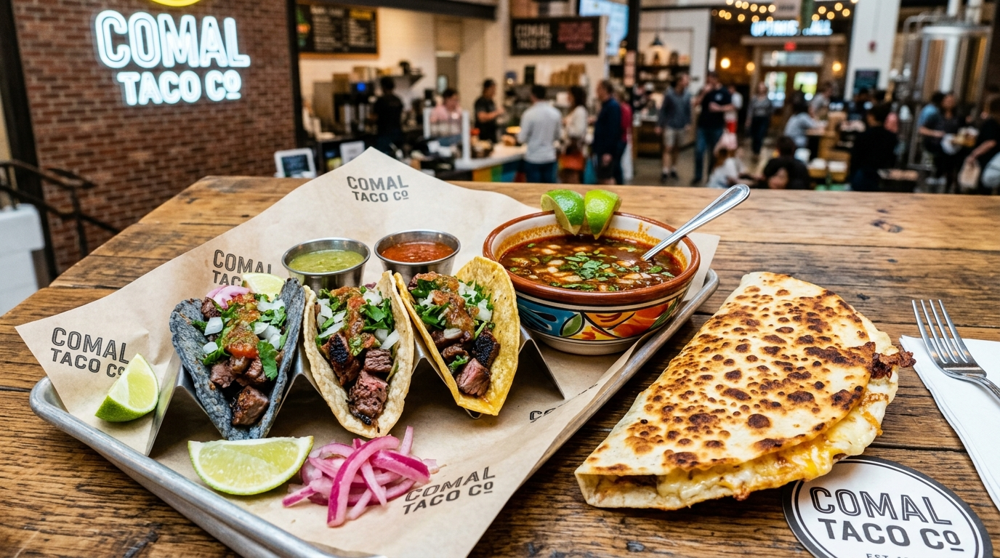

1. Fresh Hand-Chopped Parsley & Garlic
Never blended in a food processor—hand-chopped so every bite has texture, aromatic herb punch, & garlic heat.
Chimichurri is the soul of Argentine cuisine. We finely chop fresh flat-leaf parsley & garlic, steep it with dried oregano & red pepper flakes, then marry it with red wine vinegar & cold-pressed extra virgin olive oil.

Never blended in a food processor—hand-chopped so every bite has texture, aromatic herb punch, & garlic heat.
Aged red wine vinegar provides the crisp acidic bite that cuts through the buttery pastry & rich braised beef.
Steeped overnight in cold-pressed olive oil so the garlic, oregano, & chili flakes infuse completely.